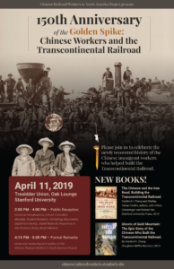

{kind=link}
{kind=link}
{kind=link}
{kind=link}
{kind=link}
{kind=link}
{kind=link}
{kind=link}
{kind=link}
{kind=link}
{kind=link}
{kind=link}
{kind=link}
{kind=link}
{kind=link}
{kind=link}
{kind=link}
{kind=link}
Event Recap
An estimated audience of four hundred scholars, Stanford community, and the general public joined us at Stanford on April 11, 2019 at our special event commemorating the 150th Anniversary of the Golden Spike and celebrating the Chinese Workers and the Transcontinental Railroad. See More.
Details:
Date: April 11, 2019, 2pm-5:30pm
Location: Tresidder Union, Oak Lounge, Stanford University
Schedule:
2:00 PM – Public Reception
Visit and View Historical Visualizations, Oral History Interviews, School Curriculum Modules, Student Research, Archeology Discoveries, Digital Scholarship, Digital Materials Repository in the Stanford Library, Book Releases
3:30 PM – Film screening (world premier): “Making Tracks: The Phillip P. Choy Story“, a documentary film by Barre Fong and Connie Young Yu. Based on material in the project’s Oral Histories collection.
4:15 PM – 5:30 PM – Formal Remarks
University Leadership and Leaders of the Chinese Railroad Workers in North America Project
Special Honors Recognition

For this event, the Chinese Railroad Workers in North America Project at Stanford received research, technical, and administrative assistance from:
Stanford American Studies Program, “America On the Move” series 2018-2019
Stanford Archeology Center
Stanford Center for East Asian Studies
Stanford Center for Spatial and Textual Analysis
Stanford Department of History
Stanford Digital Library Systems and Services
The Bill Lane Center for the American West